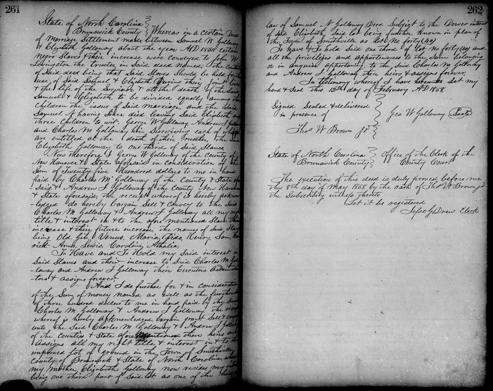

PRIMARY SOURCE S11.11
North Carolina Slave Deeds, 1833–1858 (three recorded deeds)
Brunswick County, North Carolina, Register of Deeds · 1833–1858 (People Not Property: Slave Deeds, UNC Greensboro)
| Field | Detail |
| TOC Fit | Chapter 11 · Essay prompt 11.1 (Slavery and Capitalism); Essay prompt 11.3 (The Nature of Slavery); Essay prompt 11.5 (The Plantation Mistress) |
| Why Here | Three deeds recorded in one North Carolina county show enslaved people sold by a woman to a man, pledged by a woman as security for a debt, and transferred in a group of eleven within one family. Students can weigh how routinely the law treated people as property that could be sold, mortgaged, and divided, and what it means that white women appear in these records as owners and sellers. |
| Treatment | Public-domain manuscript deed records (scanned register pages); texts transcribed from the register images |
Historical Context
In North Carolina, as in other slave states, a sale or mortgage of enslaved people was often written as a deed, proved before a court or witness, and copied by hand into the county register’s deed books. A bill of sale transferred ownership for a stated price. A deed of trust pledged enslaved people as security for a loan: if the debt was not paid, the trustee could sell them. Families also used deeds to divide or transfer enslaved people among heirs. Each such document could separate parents, children, and spouses. Under the law of coverture, a married woman’s property usually passed to her husband’s control, but widows and unmarried women could own, buy, sell, and mortgage enslaved people in their own names, and they appear regularly as grantors and grantees. The People Not Property project at the University of North Carolina at Greensboro, with the North Carolina State Archives and county registers of deeds, has scanned and indexed thousands of these records, listing the names of the enslaved people they mention. Editorial note. The three deeds are handwritten copies entered in the Brunswick County, N.C., deed books and are reproduced here as images of the register pages, from scans published by People Not Property: Slave Deeds (UNC Greensboro), which marks them as public domain. The database supplies index data (date, type, book and page, names and roles) but no transcriptions; the captions and headings above are drawn from that index, and the deed texts were transcribed for this reader from the register images, keeping the clerks’ spelling and ampersands. The index spells names as the transcribers read them (for example, “Leiws” for Lewis, given here as Lewis). Other deeds in the database can be found by name, county, or keyword at https://dlas.uncg.edu/deeds/. CAUTION: These are legal records written by and for enslavers; the enslaved people appear only as named property, usually without ages or family relationships stated, and the deeds do not show what happened to them afterward. The first deed is headed “County of Chatham” although it was proved and recorded in Brunswick County. In the second deed the long proviso (marked [. . .]) is omitted: it explains that the conveyance of Dave and Judy was security for Williams, who had bought a boy named Fred from Lock in 1843 for three hundred dollars and was being sued by others who claimed Fred, and that the conveyance would become void once Lock paid the costs and any damages. The third deed, despite the index wording, is made by George W. Galloway alone; it sells his one-third share, due at his mother Elizabeth’s death, in the slaves held under his parents’ 1830 marriage settlement, along with his share of her house lot in Smithville. The register spells the family name both “Golloway” and “Galloway.” Text transcribed for this reader from the repository image; illegible words are marked [illegible]. |
Document Text
Julia Moore to James Moore, bill of sale, September 17, 1833 (Brunswick County Deed Book K, p. 304)
State of North Carolina, County of Chatham. Know all men by these presents that I Julia Moore of the aforesaid State and County for and in consideration of the [illegible] sum of one hundred and fifty Dollars have bargained sold and delivered and by these presents do bargain sell and deliver unto James Moore the following negroes to wit. Peter Juba Maria Philida.
To Have and to Hold the said negroes Peter Juba Maria Philida to the said James Moore his executors administrators and assigns forever and the said Julia Moore doth hereby warrant and forever defend the title to said negroes against the claim or claims of all manner of persons.
In witness whereof the said Julia Moore has hereunto subscribed her name and affixed her seal this 17 day of September 1833. Signed sealed and delivered in presence of F. N. Waddell. Julia A. Moore (Seal)
State of North Carolina, Brunswick County. Courts of Pleas and Quarter Sessions, March Term 1834. The due execution of this Deed was proved in open Court by the oath of F. N. Waddell and ordered to be registered. Nathl. Potter Clk.
Hannah Lock to William A. Williams, deed of trust, April 13, 1846 (Brunswick County Deed Book N, p. 432)
State of North Carolina, Brunswick County. Know all men by these presents that I Hannah Lock of the State & County aforesaid, for & in consideration of the causes herein after set forth, & for the further consideration of the sum of one dollar to the said Hannah Lock in hand paid by William A. Williams of the County of New Hanover & State aforesaid at & before the signing, sealing & delivering of these presents the receipt whereof is hereby acknowledged, Have bargained, sold & delivered, & by these presents do bargain sell & deliver unto the said William A. Williams the following two Negro Slaves To Wit Dave & Judy.
To Have and To Hold the said Negroes unto him the said William A. Williams his heirs & assigns forever Provided Nevertheless & upon the following condition,
[. . .]
In Witness whereof the said Hannah Lock doth hereunto set her hand & seal the thirteenth day of April in the year of our Lord one thousand eight hundred & forty-six. Signed sealed & delivered in presence of, with the words “boy” interlined and the words “Man” scratched out, the word “Boy” between the twenty fifth & sixth & the twenty ninth & thirtieth lines on the fourth page before signing & delivering thereof. Sam Langdon.
Hannah (her mark) Lock (Seal)
State of North Carolina, Brunswick County. The due execution of the foregoing mortgage from Hannah Locke to W. A. Williams was acknowledged before me at office this 14th day of April 1846 by the said Hannah Locke. Let it be Registered. Sam Langdon Clk.
George W. Galloway, Samuel N. Galloway, Elizabeth Galloway, and others to Charles M. Galloway and Andrew J. Galloway, bill of sale, February 12, 1858 (Brunswick County Deed Book R, p. 261)
State of North Carolina, Brunswick County. Whereas in a certain Deed of Marriage Settlement made between Samuel N. Golloway & Elizabeth Golloway about the year A.D. 1830 certain negro slaves & their increase were conveyed to John W. Levingston the trustee in said deed named; the condit[illegible] of said deed being that said slaves should be held for the use of said Samuel & Elizabeth during their joint lives & the life of the survivor & at the death of the said Samuel & Elizabeth to be divided equally among their children the issue of said marriage, and the said Samuel N. having since died leaving said Elizabeth and three children to wit. George W. Golloway, Andrew J. Gollo[illegible] and Charles M. Golloway him surviving each of whom are entitled at the death of their mother the said Elizabeth Golloway to one third of said slaves.
Now therefore I George W. Golloway of the County of New Hanover & State aforesaid in consideration of the sum of Twenty five Hundred dollars to me in hand paid by Charles M. Golloway of the County & State aforesaid & Andrew J. Golloway of the County New Hanover & State aforesaid, the receipt whereof is hereby acknowledged do hereby bargain sell & convey to the said Charles M. Golloway & Andrew J. Golloway all my right title & interest in & to the afore mentioned slaves their increase & their future increase, the names of said slaves being Old Gib, Venus, Maria, Dido, Henry, Sam, Harriet, Amos, Lewis, Caroline, Athalia.
To Have and To Hold my said interest in said slaves and their increase to said Charles M. Golloway and Andrew J. Golloway their Executors Administrators & assigns forever.
And I do further for & in consideration of the sum of money named as well as the further [illegible] of three hundred dollars to me in hand paid by the said Charles M. Golloway & Andrew J. Golloway the receipt whereof is hereby acknowledged, bargain grant sell & convey unto the said Charles M. Golloway & Andrew J. Golloway of the counties & State aforementioned their heirs and assigns all my right title & interest in & to the improved lot of ground in the Town of Smithville County of Brunswick & State of North Carolina, where my mother Elizabeth Golloway now resides, my interest being one third part of said lot, as one of the heirs at law of Samuel N. Galloway Decd. subject to the Dower interest of said Elizabeth, said lot being further known in plan of the Town of Smithville as Lot No. forty (40).
To have & To hold said one third of lot No. forty (40) and all the privileges and appurtenances to the same belonging or in anywise appertaining, to the said Charles M. Golloway and Andrew J. Galloway their heirs & assigns forever. In testimony whereof I have hereunto set my hand & seal this 12th day of February A.D. 1858.
Signed Sealed & delivered in presence of Thos. W. Brown Jr. Geo. W. Galloway (Seal)
State of North Carolina, Brunswick County. Office of the Clerk of the County Court. The execution of this deed is duly proved before me this 8th day of May 1858, by the oath of Thos. W. Brown Jr. the subscribing witness thereto. Let it be registered. Jesse G. Drew Clerk.
Primary Source Images

|
Bill of sale from Julia Moore (grantor) to James Moore (grantee) for four enslaved people named in the index as Peter, Juba, Maria, and Phileda. Handwritten register copy. Brunswick County, N.C., Register of Deeds, Deed Book K, p. 304, September 17, 1833. People Not Property: Slave Deeds, NC.BRU.K.304.2.

|
Deed of trust from Hannah Lock (grantor) to William A. Williams (grantee, presumably as trustee) conveying two enslaved people named in the index as Dave and Judy as security. Handwritten register copy. Brunswick County, N.C., Register of Deeds, Deed Book N, p. 432, April 13, 1846. People Not Property: Slave Deeds, NC.BRU.N.432.1.
|
 |
Bill of sale by George W. Galloway to Charles M. Galloway and Andrew J. Galloway for eleven enslaved people named in the index as Old Gib, Venus, Maria, Dido, Henry, Sam, Harriet, Amos, Lewis, Caroline, and Athalia. Handwritten register copy. Brunswick County, N.C., Register of Deeds, Deed Book R, p. 261, February 12, 1858. People Not Property: Slave Deeds, NC.BRU.R.261.1.
Chicago Citations
Julia Moore to James Moore, bill of sale, September 17, 1833
Bibliography Entry
Moore, Julia. Bill of sale to James Moore, September 17, 1833. Brunswick County, N.C., Register of Deeds, Deed Book K, p. 304. People Not Property: Slave Deeds, Digital Library on American Slavery, University of North Carolina at Greensboro. https://dlas.uncg.edu/deeds/deed/NC.BRU.K.304.2/.
Footnote Citation (Example)
1. Julia Moore to James Moore, bill of sale, September 17, 1833, Brunswick County, N.C., Deed Book K, p. 304, People Not Property: Slave Deeds, NC.BRU.K.304.2, https://dlas.uncg.edu/deeds/deed/NC.BRU.K.304.2/.
Shortened Citation
Julia Moore to James Moore, bill of sale, September 17, 1833.
Hannah Lock to William A. Williams, deed of trust, April 13, 1846
Bibliography Entry
Lock, Hannah. Deed of trust to William A. Williams, April 13, 1846. Brunswick County, N.C., Register of Deeds, Deed Book N, p. 432. People Not Property: Slave Deeds, Digital Library on American Slavery, University of North Carolina at Greensboro. https://dlas.uncg.edu/deeds/deed/NC.BRU.N.432.1/.
Footnote Citation (Example)
1. Hannah Lock to William A. Williams, deed of trust, April 13, 1846, Brunswick County, N.C., Deed Book N, p. 432, People Not Property: Slave Deeds, NC.BRU.N.432.1, https://dlas.uncg.edu/deeds/deed/NC.BRU.N.432.1/.
Shortened Citation
Lock to Williams, deed of trust, April 13, 1846.
George W. Galloway, Samuel N. Galloway, Elizabeth Galloway, and others to Charles M. Galloway and Andrew J. Galloway, bill of sale, February 12, 1858
Bibliography Entry
Galloway, George W., Samuel N. Galloway, Elizabeth Galloway, et al. Bill of sale to Charles M. Galloway and Andrew J. Galloway, February 12, 1858. Brunswick County, N.C., Register of Deeds, Deed Book R, p. 261. People Not Property: Slave Deeds, Digital Library on American Slavery, University of North Carolina at Greensboro. https://dlas.uncg.edu/deeds/deed/NC.BRU.R.261.1/.
Footnote Citation (Example)
1. George W. Galloway et al. to Charles M. Galloway and Andrew J. Galloway, bill of sale, February 12, 1858, Brunswick County, N.C., Deed Book R, p. 261, People Not Property: Slave Deeds, NC.BRU.R.261.1, https://dlas.uncg.edu/deeds/deed/NC.BRU.R.261.1/.
Shortened Citation
Galloway et al. to Galloway, bill of sale, February 12, 1858.
Image Credits, Rights, and Related Links
Brunswick County, N.C., Register of Deeds; scan via People Not Property: Slave Deeds, Digital Library on American Slavery, UNC Greensboro, NC.BRU.K.304.2. Rights: Public domain (People Not Property: Slave Deeds record statement; county public record). https://dlas.uncg.edu/deeds/deed/NC.BRU.K.304.2/.
Brunswick County, N.C., Register of Deeds; scan via People Not Property: Slave Deeds, Digital Library on American Slavery, UNC Greensboro, NC.BRU.N.432.1. Rights: Public domain (People Not Property: Slave Deeds record statement; county public record). https://dlas.uncg.edu/deeds/deed/NC.BRU.N.432.1/.
Brunswick County, N.C., Register of Deeds; scan via People Not Property: Slave Deeds, Digital Library on American Slavery, UNC Greensboro, NC.BRU.R.261.1. Rights: Public domain (People Not Property: Slave Deeds record statement; county public record). https://dlas.uncg.edu/deeds/deed/NC.BRU.R.261.1/.